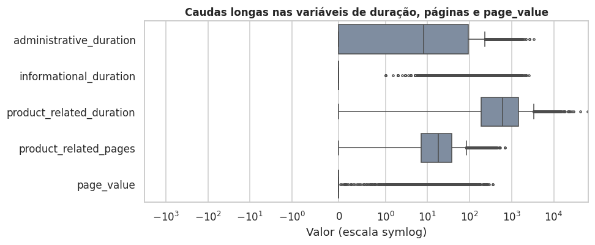
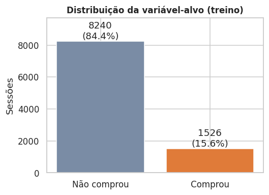
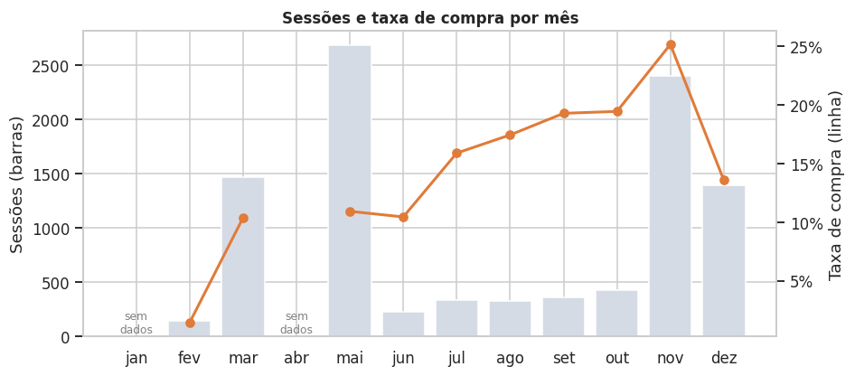
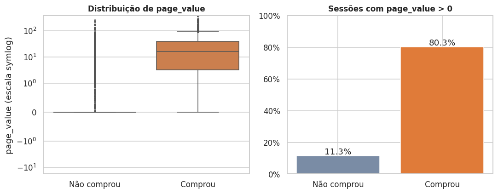
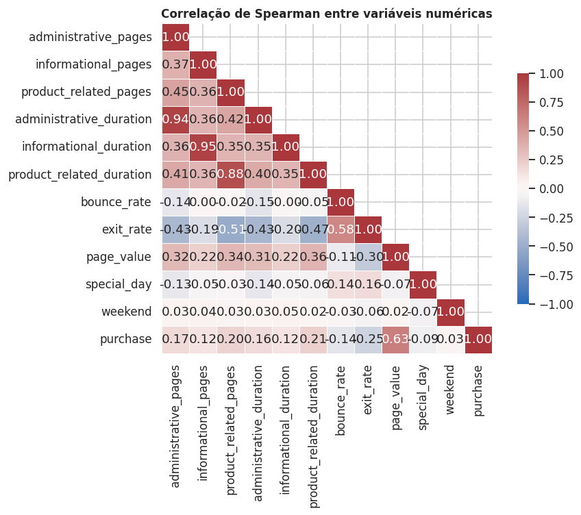
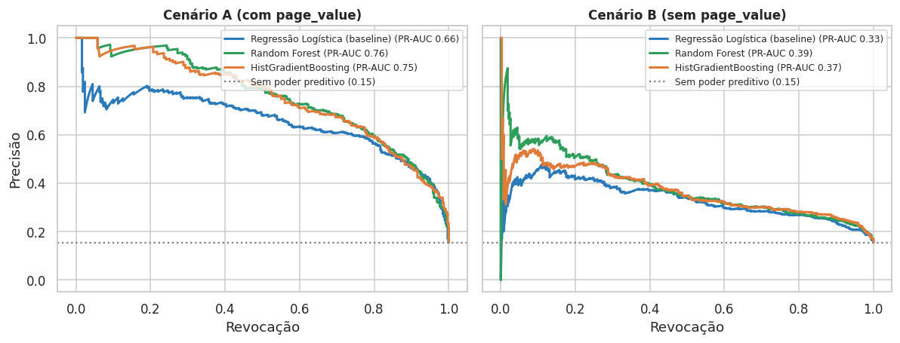
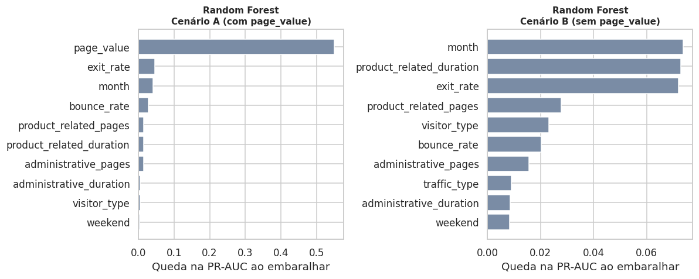

Introdução ao Aprendizado de Máquina · IFSP Campinas
Online Shoppers Purchasing Intention
Roteiro
page_valueProblema
Prever se uma sessão de navegação em uma loja virtual resulta em compra
(purchase), a partir de navegação, origem do tráfego, dispositivo e período.
purchaseBase de dados
Uma sessão em um único e-commerce (~1 ano). Fonte: UCI (Sakar & Kastro, 2018), CC BY 4.0.
page_value e special_dayPreparação
log1p + padronização
Outliers: caudas longas — mantidos de propósito
Análise exploratória
Um classificador trivial (“nunca compra”) teria ~84% de acurácia sem aprender nada. Por isso a acurácia não é métrica principal.

Análise exploratória

Análise exploratória
page_value: sinal forte demaisEngajamento também ajuda: mais páginas/tempo em produto e exit/bounce mais baixos.

Análise exploratória
class_weightpage_valueLimitações: uma loja, ~1 ano, linha = sessão (não cliente), códigos anonimizados.

Modelagem
CENARIOS = {
"A (com page_value)": COL_NUM + COL_CAT,
"B (sem page_value)":
[c for c in COL_NUM if c != "page_value"] + COL_CAT,
}
Pipeline([
("prep", ColumnTransformer(...)), # one-hot / log1p
("modelo", clone(modelo)),
])
Controle de vazamento
page_valueDesempenho “ótimo”, mas potencialmente inflado — a variável pode não estar disponível antes do desfecho.
page_valueEstimativa mais conservadora: só navegação, origem, dispositivo e período.
Resultados no teste
| Cenário | Modelo | PR-AUC | ROC-AUC | Prec. | Rec. | F1 |
|---|---|---|---|---|---|---|
| A | Reg. Logística | 0,656 | 0,924 | 0,588 | 0,775 | 0,669 |
| A | Random Forest | 0,762 | 0,935 | 0,639 | 0,757 | 0,693 |
| A | HistGB | 0,748 | 0,936 | 0,642 | 0,738 | 0,687 |
| B | Reg. Logística | 0,333 | 0,763 | 0,285 | 0,694 | 0,404 |
| B | Random Forest | 0,381 | 0,782 | 0,322 | 0,618 | 0,423 |
| B | HistGB | 0,369 | 0,788 | 0,312 | 0,623 | 0,416 |
Prevalência no teste = 0,155. Em destaque: melhor PR-AUC por cenário (Random Forest).
Resultados no teste

Linha pontilhada = modelo sem poder preditivo (prevalência 0,155).
Interpretação
page_value domina (queda ~0,55 na PR-AUC)month, tempo em produto e exit_rate
Conclusões
page_value o ganho é moderado (~2,5× a prevalência em PR-AUC).page_value o resultado sobe bastante, mas a disponibilidade no momento da decisão é duvidosa.Encerramento